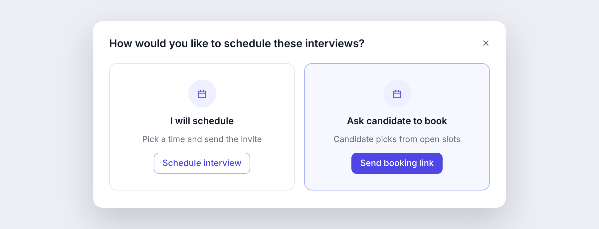
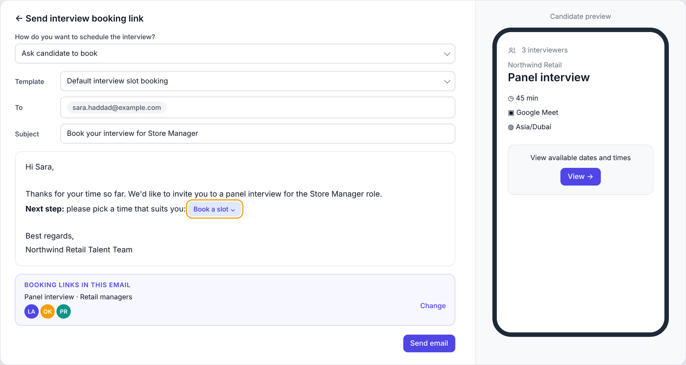
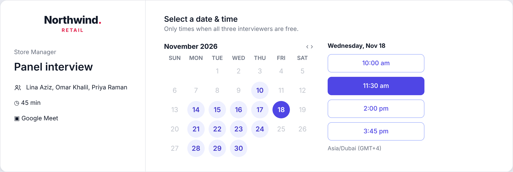

Problem
A booking link lets a candidate choose their own interview time. Ours checked only one calendar. Most interviews involve two or three people, so recruiters went back to email to coordinate.
Links also never expired, so archived candidates could still book, and every slot was 60 minutes, even for a 15-minute screening call. Customers switching from other ATS tools expected all of this to work.
Goal
One link that books the whole panel, with the controls recruiters expect.
Scope and sequencing
I grouped the requests into three needs:
- Panels: one link that shows only times when every interviewer is free.
- Control: expiry, weekly limits, and cancel and reschedule rules.
- Duration: 15, 30 or 45-minute slots.
Panels shipped first because they blocked the most customers. The rest followed in small releases, so customers saw steady progress instead of waiting for one large launch.



Seven releases
- Multiple interviewers on one link
- Link sent automatically when a candidate reaches a stage
- Expiry, cancel and reschedule rules
- 15, 30 and 45-minute interviews
- Link pauses if an interviewer's calendar disconnects
- Booking limited to selected dates
- Hiring managers see only their own links
Trade-off: the rebuild temporarily removed custom interview names. Rather than hold back the release, I briefed the affected customer on the fix and a manual workaround in the meantime.
Impact
Learnings
- Ask early which tool a customer is leaving. Most of these requests mirrored features they already had.
- Instrument before release. Tracking started after the first releases, so there's no clean before-and-after.